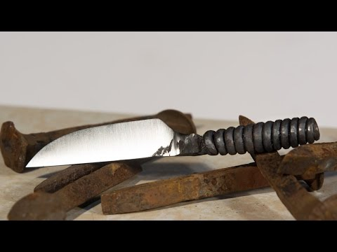
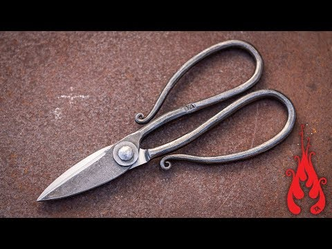

Table of Contents
The Maker »
Forging a Cat Bowie, the complete movie.

Making a Japanese Marking Knife from Damascus Steel
Making a Railroad Spike Knife

Making a Knife from an Old File

Blade - Elven Flame - process

Forging a blade from an armor-piercing projectile

First ever hand made Jagdkommando Knife without a lathe or CNC machine Part 1

First ever hand made Jagdkommando Knife without a lathe or CNC machine Part 2
Forging A Twist Seax Blade, The Second Knife!

The 3 Hour Knife Challenge!
Blacksmithing Knifemaking - Forging A Ram's Head Railroad Spike Knife

Making a pair of scissors

Chevron or Wheat twist, forge welding twists